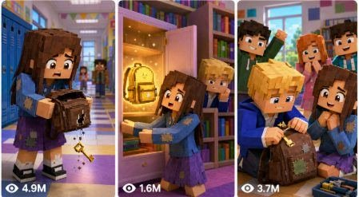

Back to all prompts
Roblox Girl Viral Short
Storyboard & Reference

Download Reference{kind=link}
Video Title
Poor Roblox Girl Finds a Secret Golden Backpack
Scene 1
Duration: 7 seconds exactly
Detailed AI Video Prompt: Roblox-style 3D animation inside one bright colorful Roblox city school world, soft cinematic lighting, soft shadows, high-quality cartoon rendering, sunny morning atmosphere, pastel blue school building, yellow buses, green lawns, clean sidewalks, colorful lockers visible through glass doors. A poor Roblox girl named Ava stands near the school steps with a worried but kind face, tan Roblox skin, big blue Roblox eyes, small smiling face style that turns nervous, long straight brown hair with a tiny pink hair clip, faded light-blue hoodie, patched purple skirt, white socks, worn pink sneakers, small brown backpack with one loose strap, slim blocky Roblox avatar proportions. A rich Roblox boy named Blake walks past her with a smug grin, light Roblox skin, shiny green Roblox eyes, spiky blond hair, confident face style, red designer Roblox jacket, black pants with gold side stripes, clean white sneakers, gold star necklace, shiny black luxury backpack, average blocky Roblox avatar proportions. Blake points at Ava’s broken backpack while other Roblox students quietly watch. Dialogue: Blake says, “That backpack is so old.” Ava softly says, “It still carries my dreams.”
Camera Angle: Low front angle near the school steps, showing Ava small in the foreground and Blake towering slightly.
Camera Movement: Slow push-in toward Ava’s nervous face.
Character Actions: Ava hugs her backpack strap; Blake laughs and walks away.
Facial Expressions: Ava looks embarrassed but hopeful; Blake looks proud and careless.
Environment Details: Bright Roblox school plaza, floating colorful leaves, shiny windows, cheerful kid-safe world.
Visual Effects: Soft sparkle on Blake’s luxury backpack, tiny dust puff from Ava’s worn sneakers.
Emotional Context: Ava feels poor and invisible, but her line creates a curiosity gap.
Story Continuity: Ava enters school holding her broken backpack tightly.
Scene 2
Duration: 7 seconds exactly
Detailed AI Video Prompt: Roblox-style 3D animation continues inside the bright colorful Roblox city school world with soft cinematic lighting, soft shadows, high-quality cartoon rendering, pastel lockers, rainbow bulletin boards, clean hallway floor, glowing trophy case nearby. Ava, the poor Roblox girl with tan Roblox skin, big blue Roblox eyes, small kind face style turning curious, long straight brown hair with a tiny pink hair clip, faded light-blue hoodie, patched purple skirt, white socks, worn pink sneakers, small brown backpack with one loose strap, slim blocky Roblox avatar proportions, sees her backpack rip open beside the trophy case. A tiny glowing golden key falls out onto the shiny hallway floor. Blake, the rich Roblox boy with light Roblox skin, shiny green Roblox eyes, spiky blond hair, smug face style, red designer Roblox jacket, black pants with gold side stripes, clean white sneakers, gold star necklace, shiny black luxury backpack, average blocky Roblox avatar proportions, freezes behind her and secretly notices the key. Dialogue: Ava whispers, “Wait… where did this come from?” Blake says, “Give that to me. It looks expensive.” Ava says, “No. It came from my bag.”
Camera Angle: Close-up floor angle on the glowing key, with Ava’s shoes and Blake’s shoes in frame.
Camera Movement: Quick tilt up from key to Ava’s surprised face.
Character Actions: Ava kneels and picks up the golden key; Blake reaches toward it but stops.
Facial Expressions: Ava looks shocked and protective; Blake looks greedy and suspicious.
Environment Details: School hallway feels magical but still Roblox-cartoon, colorful lockers and school posters.
Visual Effects: Gentle golden glow pulsing from the key, light reflecting on locker doors.
Emotional Context: The poor girl discovers something mysterious, creating a strong retention hook.
Story Continuity: Ava hides the golden key and follows its glow toward the library.
Scene 3
Duration: 7 seconds exactly
Detailed AI Video Prompt: Roblox-style 3D animation inside the same bright colorful Roblox city school world, now in a cozy school library with soft cinematic lighting, soft shadows, high-quality cartoon rendering, tall pastel bookshelves, beanbags, glowing dust particles, a large rainbow window, and a locked golden cabinet behind a reading corner. Ava, the poor Roblox girl with tan Roblox skin, big blue Roblox eyes, small brave face style, long straight brown hair with a tiny pink hair clip, faded light-blue hoodie, patched purple skirt, white socks, worn pink sneakers, small brown backpack with one loose strap, slim blocky Roblox avatar proportions, holds the golden key near the cabinet. Blake, the rich Roblox boy with light Roblox skin, shiny green Roblox eyes, spiky blond hair, jealous face style, red designer Roblox jacket, black pants with gold side stripes, clean white sneakers, gold star necklace, shiny black luxury backpack, average blocky Roblox avatar proportions, peeks from behind a bookshelf. Ava unlocks the cabinet and finds a golden backpack floating inside. Dialogue: Ava says, “A golden backpack?” Blake whispers, “That should be mine.”
Camera Angle: Over-the-shoulder angle from behind Ava, looking into the glowing cabinet.
Camera Movement: Smooth dolly-in as the cabinet opens.
Character Actions: Ava turns the key; the cabinet door opens; Blake hides and watches.
Facial Expressions: Ava looks amazed and careful; Blake looks jealous and sneaky.
Environment Details: Library remains colorful, kid-safe, cozy, and magical inside the same Roblox school.
Visual Effects: Golden backpack floats with soft sparkles, books gently wobble from the magic glow.
Emotional Context: The mystery deepens, and Blake’s secret plan creates tension.
Story Continuity: Ava reaches for the golden backpack as the room begins to shimmer.
Scene 4
Duration: 7 seconds exactly
Detailed AI Video Prompt: Roblox-style 3D animation continues inside the same bright colorful Roblox school library world with soft cinematic lighting, soft shadows, high-quality cartoon rendering, magical golden glow filling the reading corner. Ava, the poor Roblox girl with tan Roblox skin, big blue Roblox eyes, small excited face style turning worried, long straight brown hair with a tiny pink hair clip, faded light-blue hoodie, patched purple skirt, white socks, worn pink sneakers, small brown backpack with one loose strap, slim blocky Roblox avatar proportions, touches the golden backpack. Blake, the rich Roblox boy with light Roblox skin, shiny green Roblox eyes, spiky blond hair, greedy face style, red designer Roblox jacket, black pants with gold side stripes, clean white sneakers, gold star necklace, shiny black luxury backpack, average blocky Roblox avatar proportions, rushes out and grabs the other strap. The golden backpack opens and releases glowing school supplies, but only Ava’s side shines warmly while Blake’s side flickers. Dialogue: Blake says, “I deserve the best stuff!” Ava says, “Maybe it chooses kindness.” Blake says, “Backpacks do not choose!”
Camera Angle: Medium dramatic angle between Ava and Blake, golden backpack centered.
Camera Movement: Fast side-to-side handheld-style Roblox camera shake during the tug.
Character Actions: Ava gently holds the backpack; Blake yanks hard; pencils and notebooks float around them.
Facial Expressions: Ava looks worried but calm; Blake looks angry and confused.
Environment Details: Bookshelves, beanbags, cabinet, and rainbow window remain consistent.
Visual Effects: Floating pencils, glowing notebooks, soft golden particles, harmless cartoon magic burst.
Emotional Context: The twist reveals the backpack may reward kindness, not money.
Story Continuity: Blake pulls too hard and accidentally triggers a secret school challenge.
Scene 5
Duration: 7 seconds exactly
Detailed AI Video Prompt: Roblox-style 3D animation inside the same bright colorful Roblox school world, the library floor safely transforms into a colorful floating obstacle path above a glowing classroom map, soft cinematic lighting, soft shadows, high-quality cartoon rendering, safe cartoon adventure energy, no danger or scary visuals. Ava, the poor Roblox girl with tan Roblox skin, big blue Roblox eyes, small determined face style, long straight brown hair with a tiny pink hair clip, faded light-blue hoodie, patched purple skirt, white socks, worn pink sneakers, small brown backpack with one loose strap, slim blocky Roblox avatar proportions, steps carefully across floating book platforms. Blake, the rich Roblox boy with light Roblox skin, shiny green Roblox eyes, spiky blond hair, scared face style, red designer Roblox jacket, black pants with gold side stripes, clean white sneakers, gold star necklace, shiny black luxury backpack, average blocky Roblox avatar proportions, slips on a floating ruler platform and grabs the edge. Dialogue: Blake says, “Help! I was mean!” Ava says, “Grab my hand!” Blake says, “Why would you help me?” Ava says, “Because everyone matters.”
Camera Angle: Wide adventure angle showing floating platforms and both avatars.
Camera Movement: Smooth tracking shot following Ava as she reaches Blake.
Character Actions: Ava balances on a book platform and stretches out her hand; Blake grabs it.
Facial Expressions: Ava looks brave and caring; Blake looks scared and sorry.
Environment Details: The library stays visible around the magical obstacle path, keeping one continuous world.
Visual Effects: Soft golden safety glow under platforms, cartoon sparkle trails from Ava’s hand.
Emotional Context: Ava shows kindness to the person who mocked her.
Story Continuity: The golden backpack reacts to Ava’s kindness and opens fully.
Scene 6
Duration: 7 seconds exactly
Detailed AI Video Prompt: Roblox-style 3D animation continues inside the same bright colorful Roblox school library world, soft cinematic lighting, soft shadows, high-quality cartoon rendering, magical obstacle path gently fades back into the cozy library, golden cabinet glowing behind the reading corner. Ava, the poor Roblox girl with tan Roblox skin, big blue Roblox eyes, small happy face style, long straight brown hair with a tiny pink hair clip, faded light-blue hoodie, patched purple skirt, white socks, worn pink sneakers, small brown backpack with one loose strap, slim blocky Roblox avatar proportions, safely pulls Blake onto the book platform. Blake, the rich Roblox boy with light Roblox skin, shiny green Roblox eyes, spiky blond hair, regretful face style, red designer Roblox jacket, black pants with gold side stripes, clean white sneakers, gold star necklace, shiny black luxury backpack, average blocky Roblox avatar proportions, looks down in shame. The golden backpack opens and reveals a glowing note that says “Kindness Unlocks Everything.” Dialogue: Blake says, “I’m sorry, Ava.” Ava says, “You can still choose better.” Blake says, “Can I help you fix your old backpack?”
Camera Angle: Close medium angle on both avatars beside the glowing golden backpack.
Camera Movement: Gentle circular move around Ava, Blake, and the backpack.
Character Actions: Blake lowers his head; Ava smiles; the golden note floats between them.
Facial Expressions: Ava looks forgiving; Blake looks truly sorry.
Environment Details: Cozy school library, pastel shelves, rainbow window, clean floors, magical but kid-safe atmosphere.
Visual Effects: Golden note floats with soft shimmer, magical obstacle path dissolves into sparkles.
Emotional Context: The story shifts from rivalry to friendship.
Story Continuity: Ava and Blake return to the school hallway together with the golden backpack.
Scene 7
Duration: 7 seconds exactly
Detailed AI Video Prompt: Roblox-style 3D animation inside the same bright colorful Roblox city school world, now back in the main hallway near the trophy case, soft cinematic lighting, soft shadows, high-quality cartoon rendering, cheerful students in the background, pastel lockers, rainbow bulletin boards, shiny clean floor. Ava, the poor Roblox girl with tan Roblox skin, big blue Roblox eyes, small proud face style, long straight brown hair with a tiny pink hair clip, faded light-blue hoodie, patched purple skirt, white socks, worn pink sneakers, small brown backpack with one loose strap, slim blocky Roblox avatar proportions, walks with the golden backpack floating gently beside her. Blake, the rich Roblox boy with light Roblox skin, shiny green Roblox eyes, spiky blond hair, humble face style, red designer Roblox jacket, black pants with gold side stripes, clean white sneakers, gold star necklace, shiny black luxury backpack, average blocky Roblox avatar proportions, kneels and fixes Ava’s brown backpack strap using a shiny golden clip from the magic backpack. Dialogue: Blake says, “Your backpack is special.” Ava says, “It was special before the gold.” A student says, “Whoa, Ava found the kindness backpack!”
Camera Angle: Hero hallway angle facing Ava and Blake, students behind them.
Camera Movement: Slow pull-back revealing cheering students.
Character Actions: Blake repairs the strap; Ava puts on the fixed brown backpack; the golden backpack sparkles above them.
Facial Expressions: Ava looks confident and warm; Blake looks thankful and changed.
Environment Details: Same school hallway, trophy case, lockers, posters, bright colorful Roblox world.
Visual Effects: Golden clip shines, tiny heart-shaped sparkles pop gently around the repaired backpack.
Emotional Context: Ava’s old backpack becomes a symbol of hope and kindness.
Story Continuity: The mystery ends with a satisfying friendship twist.
Scene 8
Duration: 7 seconds exactly
Detailed AI Video Prompt: Roblox-style 3D animation outside the same bright colorful Roblox city school world at sunset, soft cinematic lighting, soft shadows, high-quality cartoon rendering, pastel orange sky, school steps, green lawns, yellow buses, glowing windows, happy students leaving school. Ava, the poor Roblox girl with tan Roblox skin, big blue Roblox eyes, small joyful face style, long straight brown hair with a tiny pink hair clip, faded light-blue hoodie, patched purple skirt, white socks, worn pink sneakers, repaired small brown backpack with a shiny golden clip, slim blocky Roblox avatar proportions, stands proudly on the steps. Blake, the rich Roblox boy with light Roblox skin, shiny green Roblox eyes, spiky blond hair, friendly face style, red designer Roblox jacket, black pants with gold side stripes, clean white sneakers, gold star necklace, shiny black luxury backpack, average blocky Roblox avatar proportions, stands beside her holding a box of school supplies for other students. The golden backpack opens and gently creates colorful supplies for everyone. Dialogue: Blake says, “Let’s share it.” Ava says, “That is what kindness does.” A student says, “Best school day ever!”
Camera Angle: Wide sunset hero shot from the school walkway.
Camera Movement: Smooth crane-up ending on the glowing school and happy students.
Character Actions: Ava and Blake hand out supplies; students cheer; the golden backpack floats safely above them.
Facial Expressions: Ava looks happy and confident; Blake looks kind and proud; students look excited.
Environment Details: Same school world, warm sunset, bright kid-safe Roblox city atmosphere.
Visual Effects: Soft golden sparkles, colorful notebooks and pencils gently floating into students’ hands.
Emotional Context: Satisfying ending where kindness beats showing off.
Story Continuity: Ava’s discovery changes the whole school in a positive way.
Thumbnail Text
POOR GIRL FOUND THIS?!
Thumbnail Concept
A shocked Roblox poor girl holding a glowing golden backpack in a colorful school hallway, rich boy staring with jealous eyes, golden key floating in the middle, bright yellow glow, huge curiosity gap, kid-safe Roblox cartoon style.
Video Description
A poor Roblox girl gets laughed at for her old backpack, but everything changes when a secret golden key falls out. What happens next shocks the whole school and teaches the rich boy a lesson about kindness. Watch until the end for the golden backpack twist!
SEO Keywords
Roblox story, Roblox rich vs poor, Roblox poor girl, Roblox golden backpack, Roblox school story, Roblox animation, Roblox shorts, Roblox family friendly, Roblox kindness story, Roblox mystery story, Roblox cartoon adventure, Roblox emotional story, Roblox viral story, Roblox kid friendly video
Hashtags
#Roblox #RobloxStory #RobloxShorts #RichVsPoor #RobloxAnimation #RobloxSchool #FamilyFriendly #RobloxAdventure #RobloxMystery #YouTubeShorts
Pinned Comment
Would you keep the golden backpack or share it with everyone? 🎒✨
Type NEXT for a completely new story.